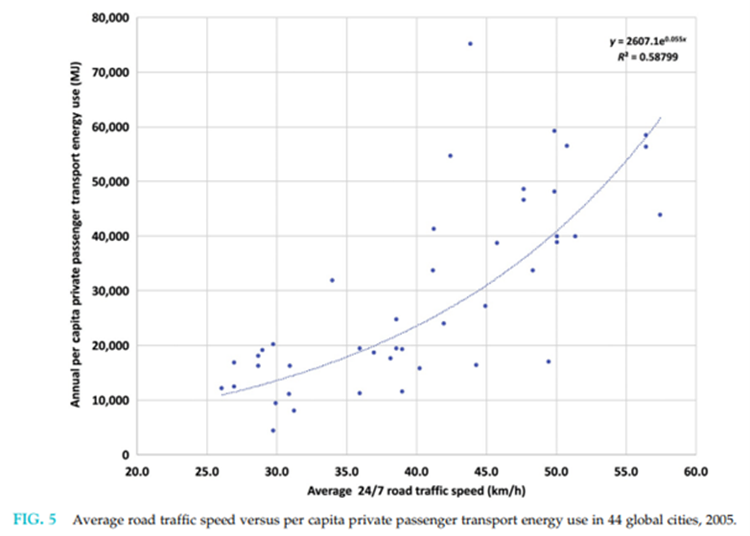

18 Road Space Reallocation
18.0.1 Description
Road space reallocation changes roadway design to favor higher value trips (such as freight and service vehicles) and more resource-efficient modes (walking, bicycling, micromodes, carpooling and buses) by including more freight and bus lanes, High Occupant Vehicle (HOV) lanes, bike lanes, and wider sidewalks. This is often called "complete streets planning" or "road diets". It can also include curb space management to favor priority uses, for example, by favoring deliveries and high-occupant vehicles over long-term parking. This improves non-auto travel while reducing automobile travel speeds and volumes.
18.0.2 Type of travel affected
Road space reallocation usually improves non-auto travel and reduces auto travel on urban corridors including suburban-to-urban commuting, and local urban travel.
18.0.3 How travel and emission effects can be measured and modelled
Transport models can quantify the improvements in non-auto travel conditions (faster and more reliable bus travel, safer and more comfortable walking and bicycling conditions), plus the slower automobile travel.
The US introduced high-occupancy transit (HOT) lanes across 400 miles of road in various states in a way to combat congestion and better utilise their underutilised high occupancy vehicle (HOV) lanes. HOT lanes can be used by vehicles with high occupancy for free but can also be used by vehicles that do not have the threshold amount of people in the vehicle but in doing so incur a fee depending on the location and time of day. This is a more unconventional approach to congestion pricing, as it seeks to better balance utilisation of existing infrastructure, but has ultimately helped decrease traffic and emissions in places where there are HOT lanes. On SR 167 in Seattle, non-HOT lane speeds increased 10% and HOT lane speeds increased 7% to 8% percent with transit ridership increasing 16% from the year before implementation of the HOT lane. There is also strong public support for the HOT lanes as it gives drivers the choose to pay the fee associated with using the HOT lane or to stay in the more congested regular lanes without paying a fee (US Department of Transportation, 2020).
Conventional travel modes are not very sensitive to many of these factors and so are likely to exaggerate the congestion delays that result from reduced automobile roadway capacity, and the mode shifts that are likely to occur from improvements to non-auto modes. Travel model improvements will be required to accurately consider all road space reallocation impacts.
Many cities are reallocating road space from general traffic lanes or automobile parking to wider sidewalks, bike lanes, bus lanes or HOV lanes, and sometimes by removing urban highways (Fleming et al., 2013). This is sometimes called road diets, streetscaping, or highway removals (Mayer 2022). There is often debate concerning their effects on emissions.
These roadway changes tend to reduce traffic speeds and by reducing automobile traffic capacity they can increase congestion, which may increase emission rates per vehicle-kilometre. Vehicle fuel efficiency generally peaks at 40 to 80 kilometres per hour and increases at higher and lower speeds. Reducing high traffic speeds tends to reduce vehicle emission rates but reducing speeds below 40 kilometres per hour may increase rates. Reducing severe congestion (LOS D-F) reduces fuel consumption and emissions but reducing moderate congestion (LOS C) often increases these impacts, particularly over the long run if capacity expansion induces additional vehicle travel.
However, as discussed previously, most people maintain a fixed travel time budget, the amount of time that people devote to travel tends to maintain equilibrium, so if travel speeds decline, they tend to drive fewer kilometres, for example, choosing closer destinations or alternative modes. Analysis by Bigazzi and Figliozzi (2012), suggests that reducing roadway capacity does not necessarily increase emissions; the net effect depends on the balance of changes in vehicle operating efficiency, congestion level and fleet composition. In the long run, roadway capacity reductions are likely to reduce emissions by reducing total vehicle travel. Mode shifts are particularly likely to occur if automobile capacity is reduced while other modes are improved, for example, with bike- or bus-lanes, and vehicle travel reductions are particularly likely if Smart Growth policies allow more compact infill.
Data from the Millennium Cities Database indicates thatPer capita motor vehicle travel and transport energy consumption tend to increase with traffic speeds, as indicated below. This apparently reflects the tendency of larger urban highways with higher design speeds to encourage people to drive more kilometres and choose more dispersed destinations, and their negative impacts on non-auto modes.
Figure 11 Average Road Speeds Versus Private Transport Energy Use

Source: Kenworthy (2018)
As traffic speeds increase in a city, so does per capita transport energy consumption.
Researchers have estimated a 10% car traffic reduction based on the road diet scenarios in US cities which would potentially contribute to reducing the VKT (Noland et al., 2015).
18.0.4 Secondary impacts
Road space reallocation tends to significantly improve travel by resource-efficient modes and reduce urban automobile travel, which provides many benefits. Road space reallocation can help ensure that non-drivers receive their fair share of roadway resources.
Road diets can reduce speeds (eg, lane reduction in Xingcheng, China lowered speed from 50kph to 45kph), including excessive speeds (eg, 4 lanes to 3 in Orlando, US reduced excessive speeds by 8-10%) and increase cyclists (eg, Davis, US).
18.0.5 Key Information sources
Complete Streets (www.completestreets.org).
A campaign to promote roadway designs that accommodate multiple modes and support local planning objectives.
Fleming (Allatt), T., S. Turner and L. Tarjomi (2013), Reallocation of Road Space, Research Report 530, NZ Transport Agency (www.nzta.govt.nz); at https://bit.ly/3GRzthS.
This study investigates the economic impact of transport choice and road space allocation on retail activity in New Zealand cities.
Gössling, Stefan (2020), Why Cities Need to Take Road Space from Cars - And How this Could be Done," Journal of Urban Design (doi.org/10.1080/13574809.2020.1727318); at www.tandfonline.com/doi/full/10.1080/13574809.2020.1727318.
This study concludes that automobile receive more than their fair share of road space relative to their share of trips and recommends road space reallocation.
ITF (2021), Reversing Car Dependency, International Transport Forum (www.itf-oecd.org); at www.itf-oecd.org/sites/default/files/docs/reversing-car-dependency.pdf.
This study critically evaluates current planning practices that tend to favor automobile travel, and recommends reforms, including road space reallocation, to create more efficient and equitable communities.
ITF (2022), Streets that Fit: Re-Allocating Space for Better Cities, International Transport Forum (www.itf-oecd.org); at www.itf-oecd.org/streets-fit-re-allocating-space-cities.
This report describes why and how to reallocate urban road space.
King, David A. and Kevin J. Krizek (2020), "The Power of Reforming Streets to Boost Access for Human-Scaled Vehicles," Transportation Research Part D, Vo. 83 (https://doi.org/10.1016/j.trd.2020.102336); at https://bit.ly/3eeBMNM.
This article identifies reasons to redesign streets to favor active mode over automobile travel.
Noland, R.B., Gao, D., Gonzales, E.J., Brown, C., 2015. Costs and benefits of a road diet conversion. Case Stud. Transp. Policy 3, 449–458. https://doi.org/10.1016/j.cstp.2015.09.002
OECD (2021), Transport Strategies for Net-Zero Systems by Design, Organization for Economic Cooperation and Development (www.oecd.org); at https://bit.ly/31Qi1Ll.
Packer, Ryan (2022), Seattle Moves Toward Devoting Street Space to Freight, The Urbanist (www.theurbanist.org); at www.theurbanist.org/2022/03/02/seattle-moves-toward-devoting-street-space-to-freight.
Streetspace Allocation Option Generation Tool (https://ifpedestrians.org/roadoptions/public), developed by the Centre for Transport Studies at University College London for the European Union’s MORE (Multi-modal Optimization of Roadspace in Europe).
Helps redesign, reallocate, or regulate streetspace to meet specific community policy goals, including accommodating various modes, minimizing pollution emissions and supporting local economic development.
Tan, C. H. (2011). Going on a road diet. Public Roads, 75(2), 28–33.
Toole Design (2021), Ensuring an Equitable Approach to Rebalancing Streets; 14 Strategies to Manage Change with Ethics, Equity, and Empathy, TOOLEDESIGN (https://tooledesign.com); at https://bit.ly/3sP4I5I.
Will, Marie-Eve, Yannick Cornet and Talat Munshi (2020), "Measuring Road Space Consumption by Transport Modes: Toward a Standard Spatial Efficiency Assessment Method and an Application to the Development Scenarios of Rajkot City, India," Journal of Transport and Land Use, Vo. 13, 1 pp. 651–669 (https://doi.org/10.5198/jtlu.2020.1526).